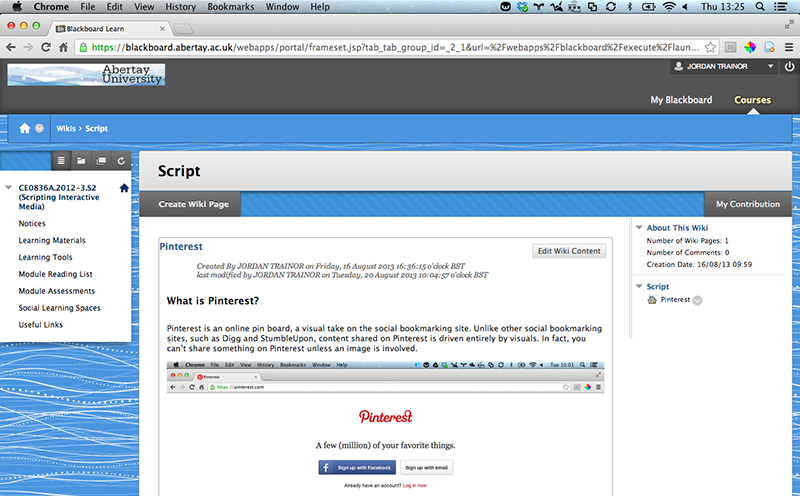

Blackboard Wiki
Share Knowledge

What is Blackboard Wiki?
Blackboard Wiki is a tool that is provided for subjects in Blackboard. If the wiki has been enabled by the lecturer, it can be found under the learning tools section on the left menu. It allows you to collaborate on wiki articles by adding text and images.
First Steps
- Go to Blackboard.
- Login with your student number and password.
- Select your module subject and to to the subject page.
- Choose the Learning Tools from the left menu.
- Click on the wiki link. (It may be name something other than wiki, depending on what the lecturer has speified.)
Features
- Create and edit wiki articles within the Blackboard system.
- Collaborate on articles with others.
- Add images to articles to help visualise ideas.
- Use HTML to format they layout.
- Add styling with a built in css editor.
- Can embed videos.
How to share
- Sign into Blackboard.
- Click “Courses” at the top right of the page.
- Select the course you’re using the wiki for.
- Click “Learning Tools” from the left menu.
- Select the Wiki (name of the wiki may vary).
- Select to “Create Wiki Page” or browse the current articles and select “Edit Wiki Content.”
- Everything in the article can now be created or edited.
- Use the toolbar to apply various settings to text, style, add images, or add video.
- When finished, click the “Submit” button.
Tips & Links
- Blackboard has many useful tools such as Virtual Classroom, chat and a Wiki. These tools must first be activated by the lecturer in order to use them and are available under the tools menu from each subject.